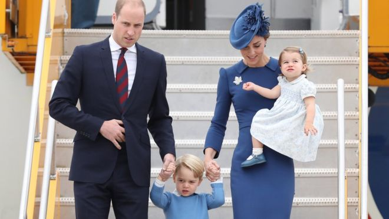
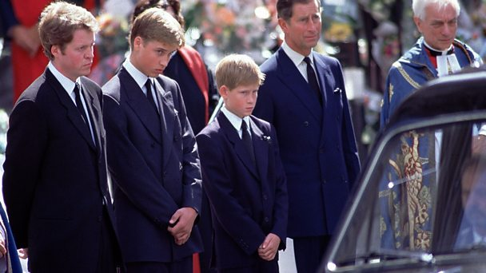

Prince William says keeping a stiff upper lip can damage health

The British "stiff upper lip" should not be allowed to endanger mental health, the Duke of Cambridge has said.
He said he wanted his children to grow up able to express their feelings.
Prince William has also teamed up with pop star Lady Gaga - in a video call they spoke about the importance of people talking about their struggles.
It comes after Prince Harry revealed he sought help after nearly 20 years "not thinking" about the death of their mother, Diana, Princess of Wales.
'Tipping point'
Prince William's comments on the "stiff upper lip" came in an interview - alongside Prince Harry - with a magazine produced by the charity Campaign Against Living Miserably (Calm), which is dedicated to preventing male suicide.
- Prince Harry 'in total chaos' over mother Diana's death
- 'Like Prince Harry, I blocked out my mum's death'
Prince William talked about his "tipping point", which was his exposure to suicide - the biggest killer of men aged under 45 in the UK - through his work as an air ambulance pilot.
He told Calm that while there might be a time and a place for the "stiff upper lip", it should not be at the expense of people's health.
The future king and his brother are using the intense interest they generate to focus attention on a cause they are increasingly passionate about, BBC royal correspondent Peter Hunt said.
Lady Gaga call
Prince William spoke to Lady Gaga, as part of the Heads Together #oktosay campaign to encourage people to speak out about their mental health challenges.
The pair discussed how speaking freely on mental health problems can help shatter the stigma around them.

Lady Gaga said the series of films produced by the charity told "beautiful stories".
"It reminded me how much my mental health changing changed my life," she told him, from her home in Los Angeles.
"There's a lot of shame attached to mental illness, you feel like something's wrong with you. In my life I go 'look at all these beautiful, wonderful things that I have, I should be so happy'.
"But you can't help it if in the morning when you wake up you are so tired, so sad, so full of anxiety and the shakes that you can barely think."
She said discussing her mental health "was like saying, this is a part of me, and that's ok".

Sign-up to get news from the BBC in your inbox, each weekday morning
The duke has also said it was important for role models to open up about their mental health - including grime artist Stormzy.
"The recent interview by Stormzy about his depression was incredibly powerful and will help young men feel that it's a sign of strength to talk about and look after your mind as well as your body," he said.
'Close to breakdown'
Prince William said he and the Duchess of Cambridge wanted their children - George and Charlotte - to grow up able to talk about their emotions and feelings.
Prince Harry has acknowledged that he did not do that.
In an interview with the Daily Telegraphon Monday, he said it had not been until his late 20s that he had processed the grief of losing his mother when he was 12 in 1997.
Before reaching that point, he had endured two years of "total chaos" and come close to a "complete breakdown", he said.

Prime Minister Theresa May praised the princes speaking out about mental health issues.
"The bravery of those in public positions who speak out about their experiences helps smash the stigma around mental health and will help thousands of people to realise they are not alone."
Mental health charity Mind described Prince Harry's interview as a "true turning point".
The two princes, along with the Duchess of Cambridge, are promoting the Heads Together mental health campaign, the London Marathon's charity of the year.
A two-part series, Mind Over Marathon, starts on BBC One at 21:00 BST on Thursday 20 April, as part of a Minds Matter series of programming about mental health issues.